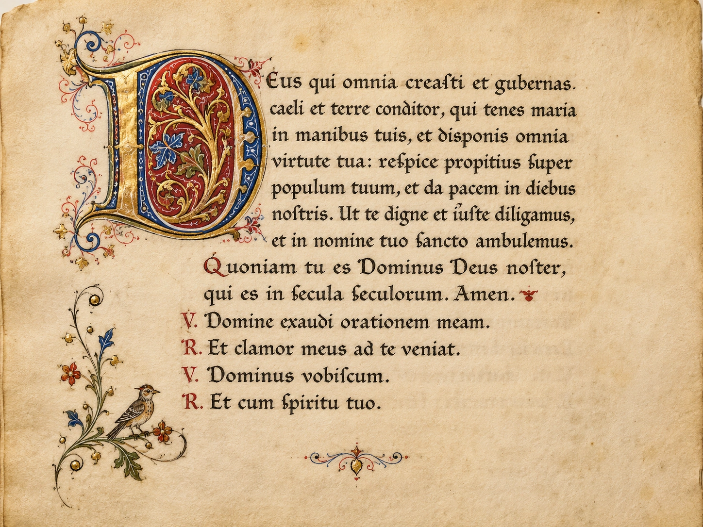

Vad gjorde munkarna egentligen?
Om du som elev hörde "kloster" och tänkte på män i kåpor som mumlade böner hela dagen — så hade du rätt på ett sätt, men du missade nästan allt det andra. Munkar och nunnor i medeltidens kloster bad mycket, ja. Men de var också bönder, vinmakare, bryggare, läkare, lärare, författare, bibliotekarier, kopister och administratörer. Klostren var inte avskilda platser där folk drog sig undan från världen. De var några av de mest organiserade, produktiva och kunskapsbärande institutionerna i hela det medeltida Västeuropa.
Vi ska titta närmare på hur det gick till.
Benedikt och regeln
En person formade klosterlivet i Västeuropa mer än någon annan: Benedikt av Nursia. Han levde på 500-talet — alltså bara några decennier efter Västroms fall — och grundade ett kloster i Monte Cassino i Italien. Där skrev han en bok som kom att forma munkars och nunnors liv i över tusen år: Regula Benedicti, Benedikts regel.
Regeln är inte särskilt lång. Men den är detaljerad. Den beskriver hur dagen ska se ut. När man ska be. När man ska arbeta. När man ska äta. Hur en abbot (klostrets ledare) ska väljas. Hur munkarna ska behandla varandra. Hur gäster ska tas emot. Hur den som bryter mot reglerna ska straffas.
Kärnan i Benedikts regel sammanfattas ofta med tre latinska ord: ora et labora — "be och arbeta". Klosterlivet skulle vara en balans mellan andlig bön och praktiskt arbete. Inget av delarna fick försvinna. Den som bara bad blev lat. Den som bara arbetade glömde Gud.
I århundradena efter Benedikt spred sig benediktiner-klostren över hela Västeuropa. Tusentals kloster, från Italien till Irland, följde i grova drag Benedikts regel. Det skapade en gemensam klosterkultur över hela Europa — något ovärderligt i en tid då Europa annars var splittrat i många små kungariken.
En dag i klostret
Klosterdagen följde timmarna — åtta bönestunder utspridda över dygnet, med arbete och studier emellan.
Klockan 02 på natten började dagen. Munkarna gick upp i mörker, gick till klostrets kyrka och sjöng natt-bönen, matutiner. Det var årets längsta bönestund — psalmer, läsningar, sång i ljus av oljelampor i en kall kyrka. Vintern, när nätterna var som längst, kunde det ta tre timmar.
Sedan följde laudes vid gryningen, prim när solen gick upp, tertia mitt på förmiddagen, sext mitt på dagen, non tidig eftermiddag, vesper vid solnedgången, och completorium sent på kvällen. Åtta bönestunder, sammanlagt fyra till sex timmar bön per dag.
Resten av dagen var arbete och studier. Munkarna delades upp efter förmåga och uppgift. Vissa skötte trädgården, fårhuset, vingården eller bryggeriet. Andra arbetade i klostrets kök, tvätt eller sjukstuga. De lärda — de som kunde latin och hade tid över — gick till skriptoriet.
Maten var enkel. Två måltider om dagen, oftast i tystnad eftersom en munk läste högt ur en helig text medan de andra åt. Vegetabilisk kost för det mesta — kött var begränsat. Vin eller öl till maten, vatten var inte alltid säkert att dricka.
Klockan 21 var det dags att sova igen. Sedan började samma rytm dagen efter. Och dagen därefter. År ut, år in. Det är en disciplin som är nästan ofattbar för en modern människa.
Skriptoriet — där böckerna föddes
Av allt klostren gjorde är det skriptoriet — klostrets skrivsal — som har haft störst betydelse för Europas historia.
Skriptoriet var en stor sal, ofta med stora fönster för att få in dagsljus (innan elektricitet behövdes naturligt ljus). Där satt munkar vid skrivpulpeter, lutade över pergament — torkad och behandlad djurhud. En bok av samma storlek som dagens bibel kunde kräva skinnet av över 200 lamm eller kalvar. Pergament var dyrt.
På pergamentet skrev munken med en gåspenna doppad i bläck gjort av sot, vatten, och ibland kådaextrakt. De fina, dyra böckerna fick också gulddetaljer — guldfolie pressad in i bokstävernas övre partier, med röda och blå målningar i marginalerna. Sådana böcker kallas illuminerade handskrifter eftersom guldet och färgerna fick sidorna att lysa upp.
En enda bok kunde ta månader att färdigställa. Stora bibelhandskrifter kunde ta år. En munk arbetade ofta med samma bok hela sitt liv. Och allt skedde i tystnad — talande var förbjudet i skriptoriet, för att inte störa andras koncentration. Munkar utvecklade till och med ett enkelt teckenspråk för att kommunicera nödvändiga saker.
Vad kopierade de? Allt. Bibeln förstås. Böneböcker. Skrifter av kyrkofäder som Augustinus och Gregorius. Men också — och det är detta som gör klostren så historiskt viktiga — gamla antika texter. Vergilius "Aeneiden". Cicero. Aristoteles. Platon (åtminstone vissa av hans verk). Plinius "Naturhistoria". Geometri, astronomi, medicin. Mycket av det vi idag kallar antikens lärdom hade förmodligen försvunnit helt om inte munkarna kopierat handskrifterna generation efter generation.
Tänk på det. När du läser om Sokrates, om romerska kejsare, om grekisk filosofi — så är det troligt att texten du läser har överlevt eftersom en namnlös munk någon gång under medeltiden suttit i ett kallt skriptorium någonstans i Europa och kopierat den för hand. Utan klostren hade vår förståelse av antiken varit mycket fattigare.

Klostret som ekonomisk motor
Men klostren var inte bara böneplatser och bibliotek. De var också mycket stora ekonomiska företag.
Ett stort medeltida kloster kunde äga tusentals hektar mark. Det kunde ha hundratals bönder som arbetade på dess marker. Det kunde äga byar, marknader, kvarnar, broar och vägtullar. Det kunde tillverka och sälja vin, öl, ost, läkemedel, ull och kläder.
Klostren var ofta innovativa. Det var munkar som finslipade metoderna för att brygga öl med humle (vilket gav den hållbarhet att kunna lagras och säljas). Det var munkar som odlade upp tidigare obrukade marker — torrlade träsk, röjde skogar, byggde dammar. Det var munkar som experimenterade med medicinalväxter och utvecklade tidig medicinsk kunskap. Det var i klostren som tidiga vatten- och vindkvarnar fick teknisk utveckling.
Detta är värt att stanna upp vid. I en tid när Västeuropa var fattigt, splittrat och under press, var klostren öar av effektivitet och produktivitet. De kunde planera långsiktigt — generationer av munkar arbetade på samma projekt. De hade pengar att investera. De hade kunskap att utveckla. De hade arbetskraft att tillgå.
Detta skapade också spänningar. När klostren blev rika och mäktiga uppstod kritik. En del menade att klostren hade glömt sitt ursprung — att munkar som ursprungligen lovat att leva i fattigdom nu levde i lyx. Reformrörelser inom klostervärlden växte fram just som protester mot att klostren blivit för rika och bekväma. De grundade nya, strängare klosterordnar som försökte återgå till Benedikts ursprungliga ideal.
Men trots reformerna — eller kanske tack vare dem — fortsatte klostren att vara centrala institutioner under hela medeltiden.
Klostren och kvinnor
Det är värt att nämna att klosterlivet inte bara var för män. Kvinnor kunde också gå i kloster — som nunnor. Nunneklostren följde liknande regler som munkklostren, med bön, arbete och studier. Vissa berömda kvinnor i medeltidens historia — som Hildegard av Bingen — var nunnor och abbedissor som blev författare, kompositörer, mystiker och rådgivare till påvar.
För medeltida kvinnor kunde kloster faktiskt vara en av få vägar till bildning, oberoende och makt. En kvinna som inte ville gifta sig — eller vars familj inte hade pengar till hemgift — kunde gå i kloster. Där kunde hon lära sig läsa och skriva, studera, leda andra och i bästa fall bli en respekterad lärd person. Det var inte alltid ett fritt val (många unga flickor placerades i kloster utan att tillfrågas), men det var en av de få platser i medeltidens samhälle där kvinnor kunde äga, bestämma och utvecklas intellektuellt.
Klostren i Sverige
I Sverige började kloster grundas under 1100-talet — flera hundra år efter att de spridits över Västeuropa. Alvastra i Östergötland var ett av de första. Vreta, Nydala, Riseberga och senare Vadstena (grundat under 1300-talet av Heliga Birgitta) följde efter.
I svensk medeltid spelade klostren samma roll som i resten av Europa: kunskapscentra, ekonomiska motorer, andliga platser. Vadstena kloster blev särskilt viktigt — Birgittas regel skapade en ny ordning som spreds över hela Europa. Det är en av få medeltida svenska institutioner som hade europeisk genomslagskraft.
När reformationen kom på 1500-talet stängdes de svenska klostren av Gustav Vasa. Mark, byggnader och böcker togs av staten. Det är en av anledningarna till att Sverige idag har relativt få medeltida byggnader bevarade jämfört med katolska länder — där klostren fortsatte att fungera, fortsatte också byggnaderna att underhållas.
Klostren som idé
Vad var det egentligen som munkarna gjorde i tusen år?
På ett ytligt plan kan man säga att de bad, kopierade böcker, odlade mark och organiserade samhällslivet. Men på en djupare nivå gjorde de något mer: de bevarade en tradition. I en tid när mycket annat var osäkert, när städer kunde falla, kungar dö och språk förändras — fanns klostren där, dag efter dag, generation efter generation, ständigt med samma rytm. Ora et labora. Be och arbeta. Detta var stabiliteten som Europa behövde under medeltiden.
När vi i dag besöker en medeltida klosterruin — Alvastra, eller någon av de stora europeiska klostren som Cluny eller Mont-Saint-Michel — så ser vi inte bara gamla stenar. Vi ser resterna av en av historiens mest långlivade institutioner. En institution som höll i sig genom Västroms fall, vikingatåg, korståg, pestepidemier och kungars uppgång och fall. Det är en av medeltidens stora prestationer.
Stabilitet → kunskap → kontinuitet → arvet vidarefört.